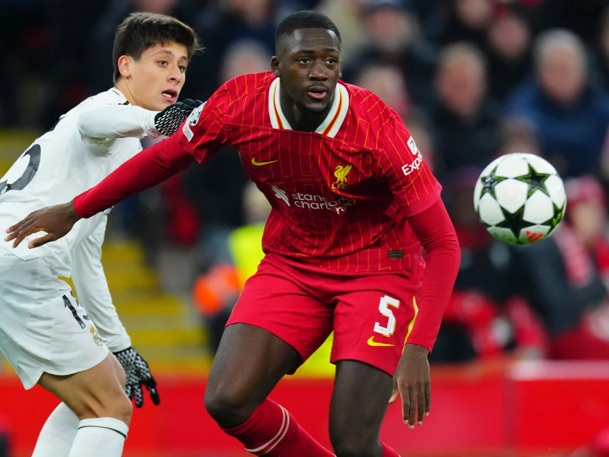

Il mio stile
Sono un difensore centrale classe 2009, determinato e disciplinato, con una forte mentalità competitiva. Gioco a calcio fin da bambino e negli anni ho sviluppato senso della posizione, capacità di lettura del gioco e sicurezza nei duelli difensivi. Mi distinguo per concentrazione, comunicazione con i compagni e capacità di guidare la linea difensiva. Il mio obiettivo è crescere costantemente e competere a livello professionistico, migliorando ogni giorno sotto l’aspetto tecnico, tattico e fisico.
Difensore Centrale | Classe 2009 Altezza: 187 cm | Piede forte: Dx
